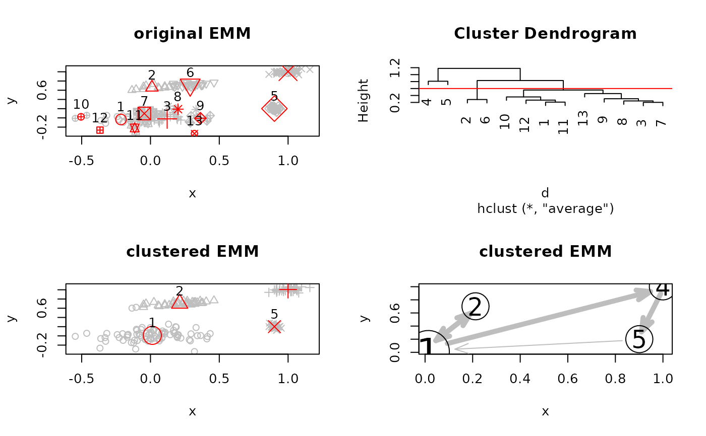

Use various clustering methods to recluster states/clusters in an EMM. The centers of the clusters in the EMM object are used as data points by the reclustering algorithm. States/centers put by reclustering into the same cluster are merged to produce a new reclustered EMM.
Usage
# S4 method for class 'EMM'
recluster_hclust(
x,
k = NULL,
h = NULL,
method = "average",
...,
prune = NULL,
copy = TRUE
)
# S4 method for class 'EMM'
recluster_kmeans(x, k, ..., prune = NULL, copy = TRUE)
# S4 method for class 'EMM'
recluster_pam(x, k, ..., prune = NULL, copy = TRUE)
# S4 method for class 'EMM'
recluster_reachability(x, h, ..., prune = NULL, copy = TRUE)
# S4 method for class 'EMM'
recluster_tNN(x, threshold = NULL, ..., prune = NULL, copy = TRUE)
# S4 method for class 'EMM'
recluster_transitions(x, threshold = NULL, ..., prune = NULL, copy = TRUE)Arguments
- x
an
"EMM"object.- k
number of clusters.
- h
heights where the dendrogram tree should be cut.
- method
clustering method used by
hclust.- ...
additional arguments passed on to the clustering algorithm.
- prune
logical; prune states with less than
prunecounts before reclustering.- copy
logical; make a copy of x before reclustering? Otherwise the function will change
x!- threshold
threshold used on the dissimilarity to join clusters for tNN. If no threshold is specified then the threshold stored in the EMM is used.
Value
An object of class "EMM" or, if copy=FALSE a refernece
to the changed object passed as x.
Clustering information is available
as the attribute "cluster_info".
The information provided depends
in the clustering algorithm (see hclust, kmeans and pam).
Details
For recluster_kmeans k can also be a set of initial cluster
centers (see argument centers for kmeans in package stats).
For recluster_hclust k or h can also be a vector.
The result is then a list with several (nested) EMMs, one for each value.
For recluster_reachability reclusters all clusters which are reachable
from each other. A cluster \(j\) is reachable from \(i\) if
\(j\)'s center is closer to \(i\)'s center than h or if \(j\) is
reachable by any cluster reachable by \(i\).
For recluster_tNN reclusters such that two clusters with
centers less than the threshold apart will be reclustered into a
single cluster. This is useful, for example, after combining two models.
For recluster_transitions does not recluster clusters!
It find groups of clusters which are overlapping (centers are
less than 2 thresholds apart) and then redistributes the transition weights
such that all members of one group are connected to all the members of the
other group using the same weight.
Examples
data(EMMsim)
emm <- EMM(threshold = .2)
build(emm, EMMsim_train)
## do reclustering on a copy of the emm and plot dendrogram
emm_hc <- recluster_hclust(emm, h = 0.6)
attr(emm_hc, "cluster_info")
#> $clustering
#> 1 2 3 4 5 6 7 8 9 10 11 12 13
#> 1 2 1 3 4 2 1 1 1 1 1 1 1
#>
#> $dendrogram
#>
#> Call:
#> hclust(d = d, method = method)
#>
#> Cluster method : average
#> Distance : Euclidean
#> Number of objects: 13
#>
#>
## compare original and clustered EMM
op <- par(mfrow = c(2, 2), pty = "m")
plot(emm, method= "MDS", main ="original EMM", data = EMMsim_train)
plot(attr(emm_hc, "cluster_info")$dendrogram)
abline(h=0.6, col="red")
plot(emm_hc, method="MDS", main ="clustered EMM", data = EMMsim_train)
plot(emm_hc, method="MDS", main ="clustered EMM")

par(op)